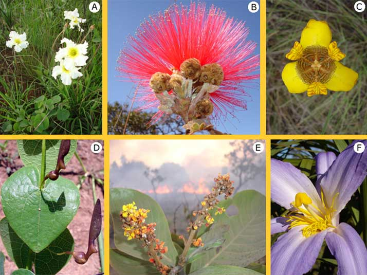

Sobre o Cerrado

O Cerrado é o segundo maior bioma do Brasil, abrangendo aproximadamente 22% do território nacional. Ele é conhecido como a savana brasileira devido às suas paisagens de árvores retorcidas e gramíneas.
Características
O Cerrado apresenta um clima tropical sazonal, com duas estações bem definidas: uma chuvosa e outra seca. O solo é ácido e pobre em nutrientes, mas adaptações únicas da vegetação garantem a sobrevivência.
Fauna
A fauna do Cerrado é rica e diversa, com espécies emblemáticas como o lobo-guará, o tamanduá-bandeira e o tatu-canastra.
Flora
A flora do Cerrado inclui árvores como o pequizeiro e o ipê, além de inúmeras espécies de arbustos e gramíneas.
Ameaças
O Cerrado enfrenta sérias ameaças, como o desmatamento e a expansão da agricultura. Cerca de 50% de sua área original já foi convertida em pastagens e plantações.
Diversidade
A biodiversidade do Cerrado é uma das maiores do mundo, com milhares de espécies de plantas, animais e microrganismos, muitos deles endêmicos.
Saberes e Tecnologias Sociais
Os saberes tradicionais dos povos do Cerrado, aliados a tecnologias sociais, têm sido usados para minimizar impactos ambientais e garantir a sustentabilidade.
Ocupação e Utilização Econômica
Impactos Econômicos
A agricultura e a pecuária são as principais atividades econômicas no Cerrado, mas causam impactos significativos no ecossistema.
Impactos Sociais
As populações locais enfrentam desafios com a perda de territórios e a degradação ambiental causada pelo uso intensivo do solo.
Características Detalhadas
| Aspecto | Descrição |
|---|---|
| Solo | Ácido, pobre em nutrientes, mas rico em biodiversidade microbiana. |
| Clima | Tropical sazonal, com estações seca e chuvosa bem definidas. |
| Relevo | Caracterizado por chapadas, planaltos e vales profundos. |
| Hidrografia | Fonte de grandes rios brasileiros, como o Tocantins e o São Francisco. |